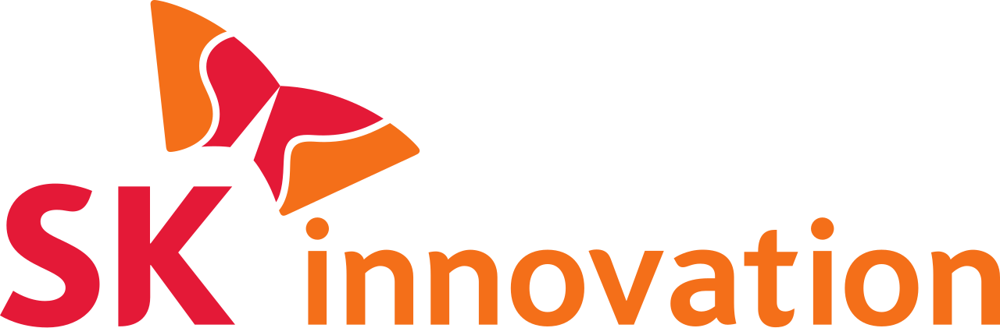

대표 로고대표 브랜드 마크
대표 로고대표 브랜드 마크홈 > 브랜드 매거진 > 포스코
포스코
포스코(POSCO)는 한국을 대표하는 철강 기업으로, 1968년 포항종합제철로 설립돼 2002년 사명을 POSCO로 바꿨다.
산업 분야 브랜드·비즈니스 · 공개 등급 자료 기반 · 브랜드 평가 4.6 ★
한눈에 보는 브랜드
포스코(POSCO)는 한국의 대표 철강 기업이다. 1968년 포항종합제철(포항종합제철주식회사)로 설립됐고 2002년 사명을 POSCO로 변경했다.
브랜드 관점
국가 주도로 출범한 한국 철강 산업의 상징으로, 철강을 넘어 2차전지 소재로 사업을 확장하며 지주사 체제로 재편한 기업이다.
시작과 성장
1968년 포항종합제철로 설립됐다(초대 사장 박태준). 1973년 포항제철소 1기를 준공했고, 2002년 사명을 포스코로 바꿨으며, 2022년 지주사 포스코홀딩스를 출범시켰다.
브랜드 아이덴티티
포항·광양 일관제철소를 운영하는 한국 대표 철강사로 한때 세계 최대 철강 기업으로 꼽혔으며, 한국 산업화의 상징으로 평가된다.
제품과 서비스
열연·냉연·후판·선재 등 철강 제품이 주력이며, 지주사 차원에서 2차전지 소재(리튬·양극재)와 에너지·무역으로 포트폴리오를 넓혔다.
사람들
현재 상태
2024년 연결 매출 약 72조6,000억 원을 기록했으나 철강 업황 부진으로 영업이익은 전년 대비 줄었고, 조강 생산 기준 세계 8위권을 유지했다.
타임라인
정리된 연도형 이벤트가 없습니다.
BI/CI 변천사
대표 로고대표 브랜드 마크함께 읽을 브랜드

브랜드·비즈니스 · 자료 기반SK이노베이션SK이노베이션(SK Innovation)은 SK그룹의 에너지·정유 중간지주회사로, 사업 기원은 1962년 대한석유공사이며 현 법인은 2011년 성립했다.
 브랜드·비즈니스 · 자료 기반한화솔루션
브랜드·비즈니스 · 자료 기반한화솔루션한화솔루션(Hanwha Solutions)은 한화그룹 계열의 석유화학·신재생에너지 기업으로, 2020년 한화케미칼에서 사명을 바꿨다.
HO
한화오션
브랜드·비즈니스 · 자료 기반한화오션한화오션(Hanwha Ocean)은 한화그룹 계열의 조선·방산 기업으로, 옛 대우조선해양을 2023년 한화가 인수해 사명을 바꿨다.
 브랜드·비즈니스 · 자료 기반삼성물산
브랜드·비즈니스 · 자료 기반삼성물산삼성물산(Samsung C&T)은 건설·상사·패션·리조트 사업을 아우르는 삼성그룹의 핵심 기업으로, 래미안 아파트 브랜드로 알려져 있다.
 브랜드·비즈니스 · 자료 기반에쓰오일
브랜드·비즈니스 · 자료 기반에쓰오일에쓰오일(S-Oil)은 사우디 아람코가 최대주주인 한국의 정유 기업으로, 1976년 설립돼 2000년 현 사명이 됐다.
HE
현대건설
브랜드·비즈니스 · 자료 기반현대건설현대건설(Hyundai E&C)은 1947년 설립된 한국의 대표 건설 기업으로, 현대그룹의 모태이자 현재는 현대자동차그룹 계열이다.
브랜드·비즈니스 · 자료 기반효성효성(Hyosung)은 섬유·중공업·화학을 아우르는 한국의 복합 기업집단으로, 1966년 동양나일론에 뿌리를 둔다.
 브랜드·비즈니스 · 자료 기반금호석유화학
브랜드·비즈니스 · 자료 기반금호석유화학금호석유화학(Kumho Petrochemical)은 합성고무·합성수지·정밀화학을 주력으로 하는 한국의 석유화학 기업이다.